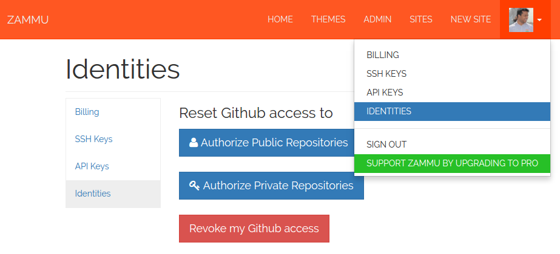

Repository not found Error
If you get a repository is not found error while trying to add a new site, it may be because you are trying to add a private GitHub repository. By default we only get access to your public repositories on GitHub. If you'd like to add a private repository follow these steps:
1. Go to the identities page and click on 'Revoke my Github access' button

2. Go to back to the identities page and click on 'Authorize Private Repositories' button
3. In GitHub authorize the access